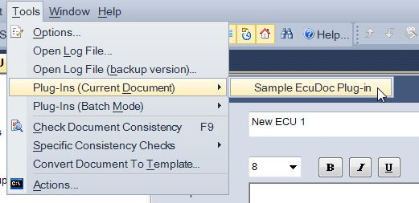
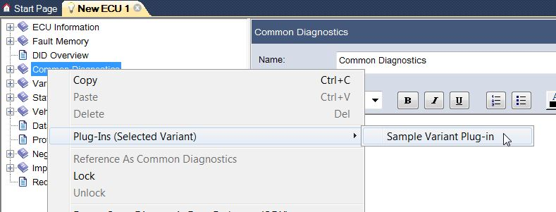
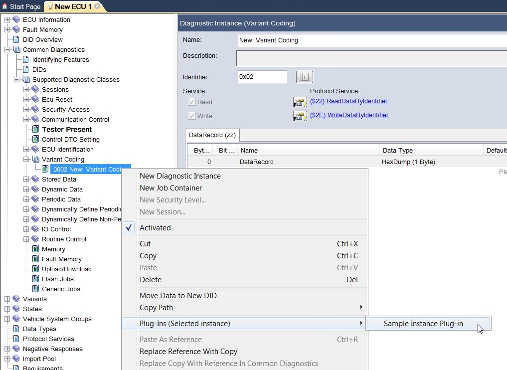
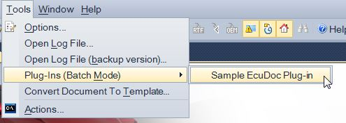

CANdela Plug-ins can be started manually by the user or automatically in the cases of an occuring event. It depends on the plug-in type in which situation a plugin may be executed or not.
[PLG-R050] Depending on the plug-in type (see next chapter), a plug-in can be executed in specific modes (see [PLG-R110] below) as follows:
Plug-in Type \ Mode |
Manually | Batch | Event Triggered |
|---|---|---|---|
| Document | yes | yes | yes |
| Variant | yes | no | no |
| Instance | yes | no | no |
[PLG-R100] CANdelaStudio supports different plug-in types for different scopes of CANdela data:
[PLG-R100-Document] A document plug-in always runs on a complete CANdela document.
You can execute this type of plug-in
[PLG-R100-DocPre] For a document plug-in marked as preliminary [PLG-R120], CANdelaStudio shows a message box "This plug-in is preliminary...".

Interactive execution of document plug-in
[PLG-R100-Variant] A variant plug-in runs on one specific variant in the document (base variant or extended variant).
You can execute this type of plug-in
[PLG-R100-VarPre] For a variant plug-in marked as preliminary [PLG-R120], CANdelaStudio shows a message box "This plug-in is preliminary..." (CDS-70727 v12).

Execution of a variant plug-in
See the execution overview [PLG-R050].
[PLG-R100-Instance] An instance plug-in runs on one specific diagnostic instance or job-container of the document.
You can execute this type of plug-in
[PLG-R100-InstPre] For a diagnostic instance plug-in marked as preliminary [PLG-R120], CANdelaStudio shows a message box "This plug-in is preliminary..." (CDS-70727 v12).

Execution of an instance plug-in
See the execution overview [PLG-R050].
[PLG-R110] Plug-ins can be executed in different ways:
[PLG-R110-Interactive] You can interactively execute document, variant and instance plug-ins (see the chapters above).
[PLG-R110-BatchMode] Document plug-ins can be executed in batch mode:

Batch Mode Execution of a document plug-in
See the execution overview [PLG-R050] above.
[PLG-R110-EventBased] CANdelaStudio can start document plugins automatically if a specific events happens.
The following events are supported:
SupportsExecutionBeforeSaveSupportsExecutionBeforeOdxExportSee the execution overview [PLG-R050] above.
All CANdela Plugins have to be installed in the 'Plugins' subdirectory of the CANdelaStudio program directory.
To check which plugins are installed in your CANdelaStudio installation, use the Module Information [MENU-R1260] in Ribbon Tab File | Product Information.
[PLG-R120] For a plug-in still being developed, the developer can set a corresponding flag.
This triggers CANdelaStudio to show a hint for a...